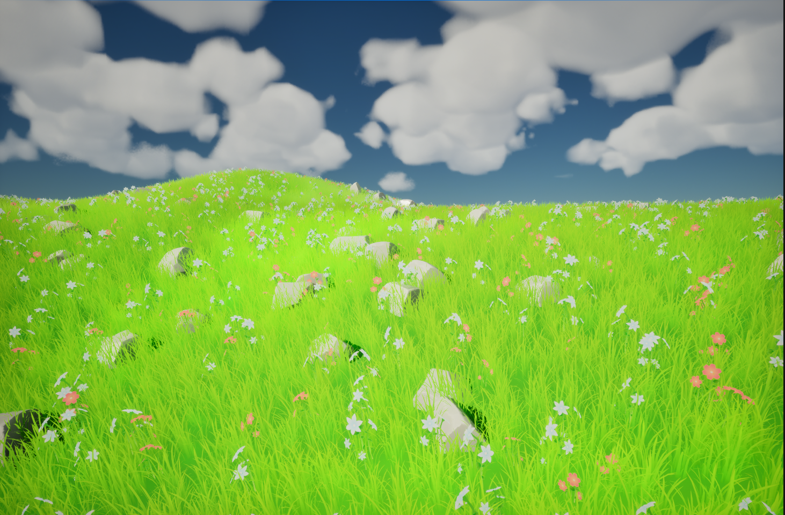
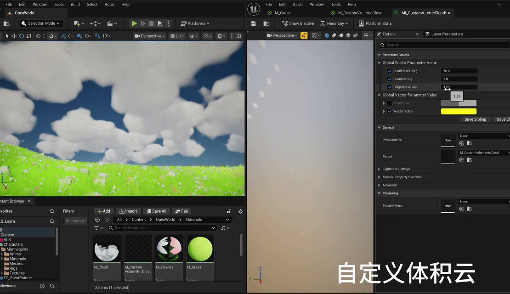
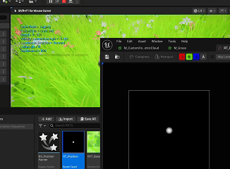

projects
OpenWorld
风格化世界 + 体积云

体积云逻辑


根据速度采样 3D Volume Texture

- ：当前 Ray March 采样点的世界坐标；
- ：云噪声的空间尺度；
- ：风向；
- ：风速；
- ：时间；
- ：用于采样 Volume Texture 的三维坐标。
根据高度做剔除

高度函数
自定义节点代码：
float x = saturate(NormAltitudeInLayer);
float a = 1.0 - exp(x);
float b = 1.0 - exp(1.0 - x);
return a * b;
这一步的主要计算：
- ：基础三维噪声；
- ：高度密度函数；
- ：Height Bias；
- ：高度修正后的原始密度。
交互草逻辑
颜色逻辑

- 底部：大地的颜色（使用 render texture）
- 顶部：自定义颜色
交互逻辑
核心：设置 RotateAboutAxis

- 旋转轴：z 轴与Vector（玩家到草） 的叉乘

- Pivot Point：草的底部
- Position：Absolute Position
核心：计算旋转角度：
- 记录玩家位置：把玩家位置写入 RT



蓝图逻辑：